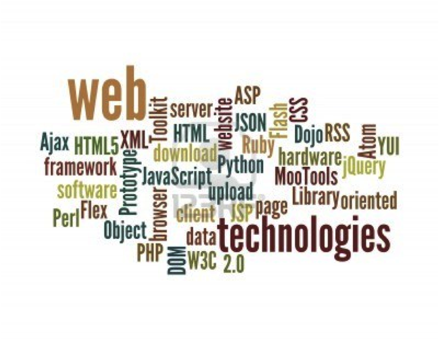
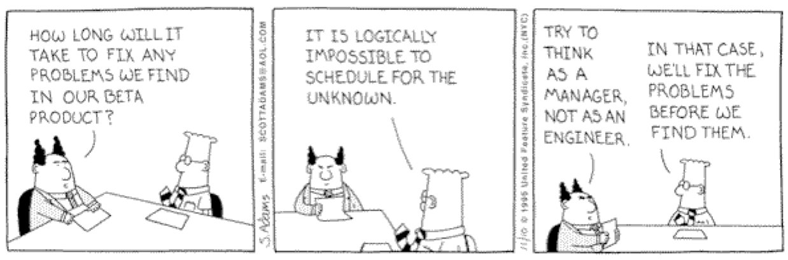
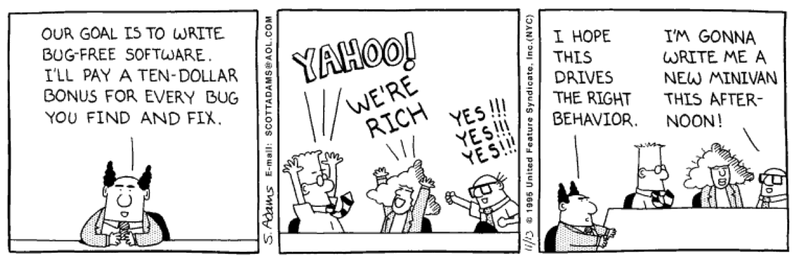

¿Qué es la IW?
proceso de ingeniería para crear aplicaciones web de calidad
no es transposición directa de la Ingeniería del Software (ISW), pero toma prestados muchos conceptos y principios fundamentales
proceso y producto Web
- etapas del proceso
- características del producto
etapas del proceso
- formular el problema
- planificar el proyecto
- analizar requisitos de la app web
- diseñar arquitectura, navegación e interfaces
- implementar la app
- probar la app
- desplegar componentes
características del producto
- distribuidas: internet
- interactivas: usabilidad
- estéticas: hipermedia
- seguras: protocolos
- eficientes: escalables
- desarrollo ultra-rápido
- evolutivas: versionado
- diversas: muchos usuarios
up
tecnologías
- desarrollo por componentes
- seguridad
- estándares
desarrollo por componentes
diversidad

formulación
- cliente y equipo de desarrollo establecen objetivos de la app
- ingenieros identifican el alcance del esfuerzo
- preguntas iniciales:
- motivación - ¿por qué?
- necesidad - ¿para qué?
- perfil de usuarios - ¿quiénes?
ejemplo
tienda electrónica para fabricante de sistemas de seguridad
- ¿por qué? - vender componentes de seguridad
- ¿para qué? - eliminar costes de distribución + incrementar ventas un X%
- ¿quiénes? - propietarios de viviendas y pymes
qué, cuándo y cómo
- arquitectura
- elegir un patrón arquitectónico [MVC]
- elegir tecnología [lenguaje y framework]
- análisis
- diseño
- construcción
análisis
identificar datos y requisitos funcionales y no funcionales de la app web
- análisis de dominio: datos
- análisis de contenidos: multimedia
- análisis de interacción: usuario-app
- análisis funcional: operaciones y funciones (buscar, comprar, catalogar, etc.)
- análisis de configuración: entorno operativo (navegador, seguridad, etc.)
qué, cuándo y cómo
- arquitectura
- análisis
- funcional: escribir casos de uso
- análisis-diseño: diagramas de robustez
- seguridad: perfiles
- diseño
- construcción
diseño
- arquitectura
- navegación
- interfaz
- datos [dominio]
- seguridad
- componentes
qué, cuándo y cómo
- arquitectura
- análisis
- diseño
- arquitectónico [mvc]
- navegación [hipermedia]
- interfaz [usabilidad + estética]
- base de datos [persistencia]
- seguridad [de apps]
- componentes [bibliotecas, add-ons, plug-ins]
- patrones de diseño
- construcción
construcción
- codificación
- pruebas
- gestión
codificación y pruebas
- minimizar complejidad
- anticipar cambios
- verificar: revisiones y pruebas unitarias, funcionales, etc.
- estándares: lenguajes, herramientas, bibliotecas, APIs
qué y cómo
- arquitectura
- análisis
- diseño
- codificación y pruebas
- utilizar componentes [spring, grails, roo, etc.]
- pruebas automáticas [junit, selenium]
gestión de la construcción
- método
- planificación
- control
- métricas
qué, cuándo y cómo
- arquitectura
- análisis
- diseño
- construcción (gestión)
- método ágil [scrum]
- herramientas de gestión de la construcción [maven]
- planificación y control - forjas [assembla, github]
- integración continua
- despliegue a producción
gestión del proyecto
mucha gente y perfiles diversos trabajan en paralelo
- análisis de riesgos
- planificación
- seguimiento
- control
- métricas
gestores o ingenieros

equipo
gestionar el equipo

perfiles
- jefe de proyecto
- desarrollador de contenidos: diseñadores gráficos y multimedia
- diseñador web [client-side]
- ingeniero web [server-side]
- especialista del dominio [cliente]
- administrador de sistemas [servers, databases]
- arquitecto web
- devop = sw developer + it operator